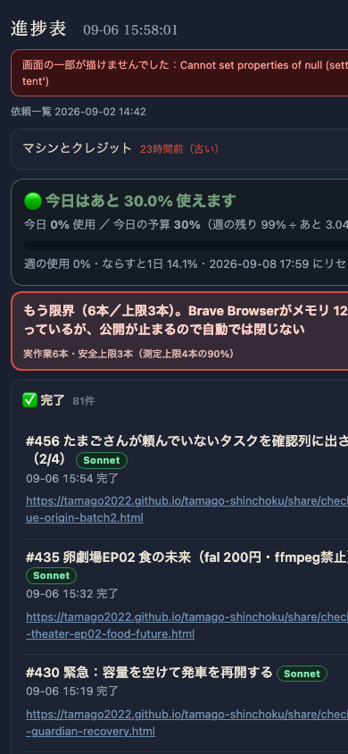
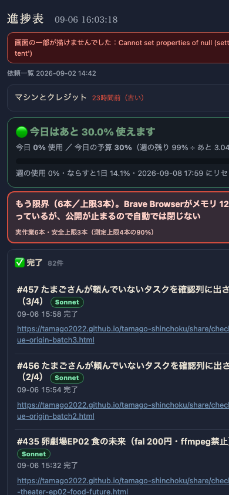

共有資料の一覧
／ 確認ページ #436 PWAが古い画面を握る問題の修理（実機検証版）
#436 PWAが古い画面を握る問題の修理（実機検証版）
2026-09-06 実装・main合流・本番(GitHub Pages)反映まで実測確認
ホーム画面アプリを開き直した瞬間、いま最新かを必ず確認するようにした。古い版で開いても、その場で自動的に最新版へ切り替わる。古いままの時は右上の鮮度表示が赤く大きくなり、タップでも強制的に読み直せる。
② 数字
62f0011acb
わざと古いバージョンを指定して開いた直後、1秒後に自動で切り替わった実際のバージョン
一致
同時刻のstatus/version.jsonの値と完全一致（サーバの最新版に正しく揃った）
③ 前と後（実データでのスクリーンショット）
古い版のURLで開いた直後（自動リダイレクトが一瞬で起きるため、実際にはこの画面はほぼ表示されない＝古い画面が見え続けることは無い）

1秒後：自動で最新版のURLに切り替わった後の実画面（進捗表が正しく表示されている）

④ 押せるリンク
本番のアプリ本体（ここを開いて確認できます）
https://tamago2022.github.io/tamago-shinchoku/
版チェックの中身（GitHub上のコード）
https://github.com/tamago2022/tamago-shinchoku/blob/main/index.html#L463-L502
失敗事例の記録（12番）
https://github.com/tamago2022/tamago-shinchoku/blob/main/status/failures.md
⑤ 何をどう確かめたか
確認項目
結果
わざと古いバージョン(?v=DUMMY_OLD_VERSION_TEST)で開く
自動検知が働くかの実験
1秒後の実際のURL
?v=62f0011acb へ自動で書き変わった
自動で書き変わった版とサーバの最新版の一致
status/version.jsonの実測値と一致
画面ロック明け・アプリ切替復帰でも即チェックするか
visibilitychange/pageshow/focusの3箇所から呼ぶよう修正済み